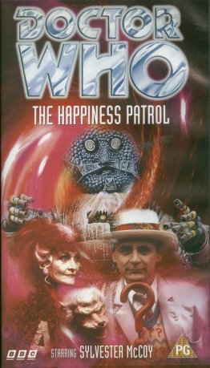

Эра Седьмого Доктора (25 сезон)
<<< НАЗАД ||| 2. Патруль счастья ||| ДАЛЬШЕ >>>
Субтитры: Русские и Английские |  |
|---|---|
Расширенная с обновленными спецэффектами Субтитры: Русские и Английские | |
The Happiness Patrol
Дата выхода: 2-16 ноября 1988
Формат: 3 эпизода по 25 мин.
 |
Доктор и Эйс прибывают на Терра Альфа — колонию, где грусть объявлена преступлением. Улицы патрулирует Патруль счастья в розово-фиолетовой униформе, недовольных называют «нытиками» и казнят в потоках расплавленной сладости, а ТАРДИС перекрашивают в розовый. За всем стоит Хелен А — жестокая правительница, помешанная на уничтожении несчастья.
Сценарий Грэма Карри — его единственная работа для сериала. Серия задумана как сатира на Маргарет Тэтчер: Хелен А — прямая отсылка к «железной леди». Кэндимен, робот-палач из сладостей, поразительно похож на маскота Bassett's Bertie Bassett — кондитерская компания всерьёз грозила судом. Рабочее название — «Кривая улыбка». А Доктор тут впервые называет своё прозвище в Академии Галлифрея — Тета Сигма.
 VHS - август 1997 |  DVD+Boxset - 7 мая 2012 |  Blu-ray - 28 октября 2024 * Версия в нашей группе |
|---|


Трейлер: